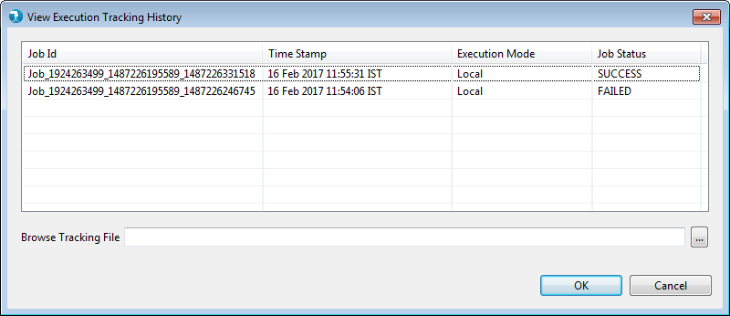
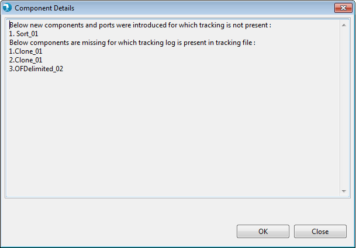

View Execution History is a replay feature for displaying execution status of specified job execution, without re-running the job itself.
To view Execution History the job should be run at least once.
If the job is never executed then you get a message saying No execution history available for this job in current session.
View Execution History feature is added on drop down of RUN button as shown below.

Fig: Click the View Execution History option to see run history.

Fig: History for previous job executions.

Fig: Browse older execution files to see execution history form past.

Fig: Message when incorrect file is selected.

Fig: Message when some components were added/removed.